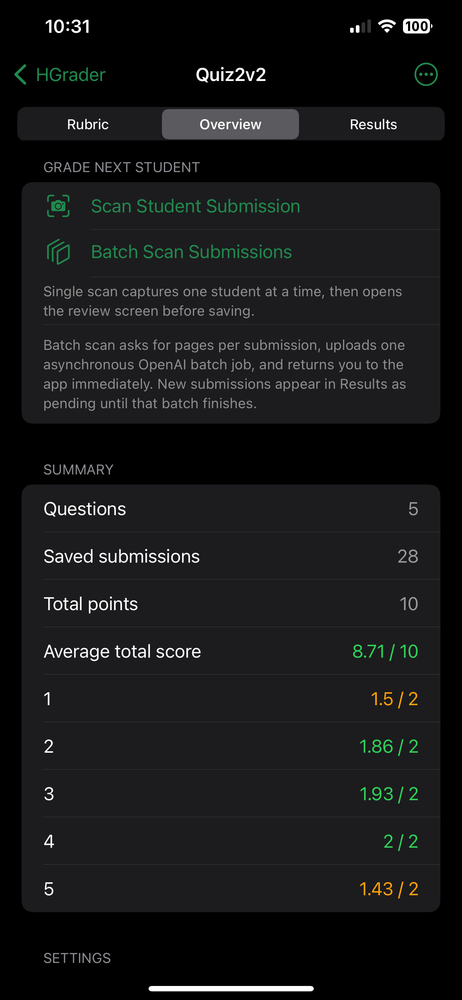

Grade any subject, any handwriting, any format — powered by frontier multimodal AI. No templates to configure. No answer-key formats to learn. Just scan and grade.



State-of-the-art omni models understand any subject and any handwriting — and get smarter with every model generation.
Calculus, organic chemistry, literature essays, circuit diagrams, foreign languages — the AI understands them all, out of the box.
Messy, tiny, sideways, or smudged — multimodal vision models parse handwriting that would slow down a human grader.
Answers in margins, out of order, or crammed between questions. The model reconstructs intent regardless of structure.
No rubric templates to fill, no answer-key formatting. Scan the blank assignment and the AI figures out the rest.
As frontier models advance, HGrader's accuracy and subject coverage improve automatically — no app update needed.
Every score comes with the AI's reasoning. Review, agree, or override — you stay in full control of every point.
HGrader stands alone until you choose to push results to Canvas.
Linear stages from setup to export — each one visible in the app.
Pick models and grading options
Capture the blank assignment
AI draft, you approve
Batch scan (recommended); single-student capture is deprecated
Adjust scores, share package
Capture, rubric review, deep results, and settings — all in one cohesive surface.

Camera capture

Rubric approval

Question details

Results

Job status
Operate the app, read internals, or connect the export to Canvas.